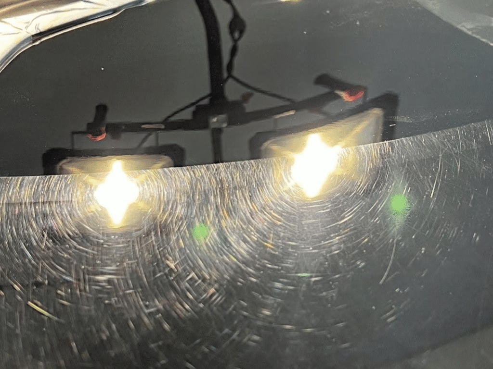
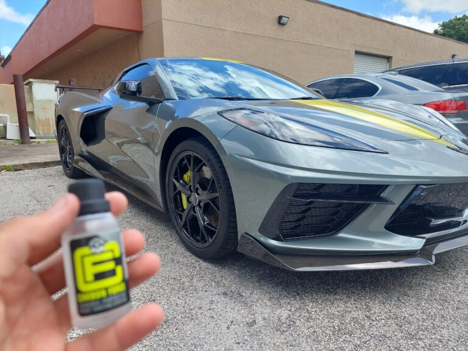
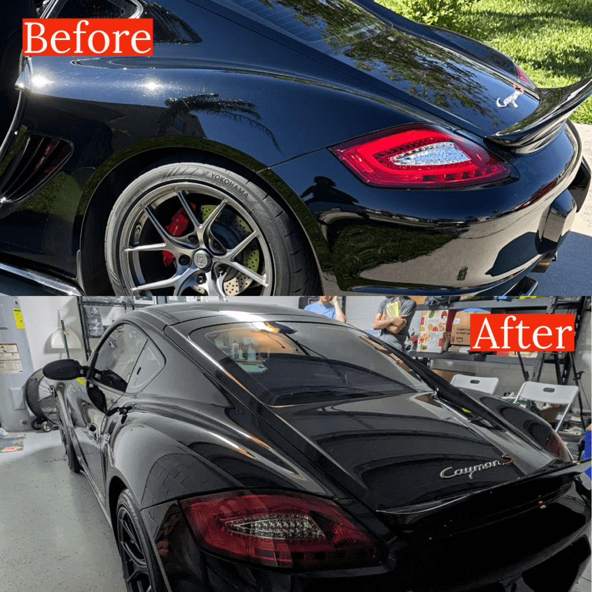

Paint correction
Refine swirls, haze, water spots, and other paint defects with a condition-led polishing plan.
See paint correction ↗Start with the paint. Refine it with professional correction, protect the finish with ceramic coating, then keep it looking right with mobile detailing.
The order matters. Paint correction improves the surface. Ceramic coating protects the refined finish. Mobile detailing maintains the result between major services.
Refine swirls, haze, water spots, and other paint defects with a condition-led polishing plan.
See paint correction ↗Add a hydrophobic layer to prepared paint for easier upkeep and enhanced gloss.
See ceramic coating ↗Keep your vehicle looking cared for with interior, exterior, and maintenance detailing brought to you.
See mobile detailing ↗Paint correction addresses swirls, haze, water spots, and light defects in the clear coat. We assess the paint first and tailor polishing to its condition.
Explore paint correction ↗
Before / After · Paint correctionCeramic coating follows surface preparation. It helps water release from paint and supports easier maintenance; it does not hide defects or make paint scratch-proof.
Explore ceramic coating ↗
Paint refined · Protection appliedMaintenance detailing brings routine interior and exterior care to your home or workplace. It is the upkeep step after correction and coating, and a practical reset for a vehicle that needs a thorough wash.
Explore mobile detailing ↗ Mobile service · Orlando
Mobile service · OrlandoA proper correction is visible in the way light reflects across the paint. Review this before-and-after example, then ask which level of refinement fits your vehicle.

Examples from the existing Details by Dame project gallery. Captions stay tied to their actual vehicle and location.
Details by Dame, LLC is based in Union Park and serves Orlando and nearby Central Florida communities. Owner Damian brings more than ten years in the detailing industry, including local Detail Garage leadership and training experience.
The focus is paint condition and finish quality: understand what the surface needs, refine it carefully, protect the result when that is the right next step, then maintain it.
Keep the existing guides that answer real questions and connect them to the service they explain.
Full detail services typically range from $249–$499+, depending on vehicle size and condition. Paint correction and ceramic coating are quoted after reviewing the finish and the level of work needed.
Have a question about your paint? Tell us what you see and what you want to change.
Paint correction comes first when the finish has swirls, haze, or other defects you want improved. Coating protects a clean, prepared surface and can make upkeep easier.
Correction can improve many light defects, but deep scratches may be too severe for safe polishing. The finish should be inspected before promising removal.
No. Ceramic coating helps with water behavior and routine maintenance, but it does not make paint immune to scratches or chips.
The business is based in Union Park and lists Orlando, Union Park, Winter Springs, and nearby Central Florida communities. Contact us to confirm your address.
Share the vehicle year, make, model, service you have in mind, and what you notice about the paint or interior. Photos can help describe the condition.
Share the vehicle and the result you want. Details by Dame can help you choose correction, coating, or maintenance detailing.